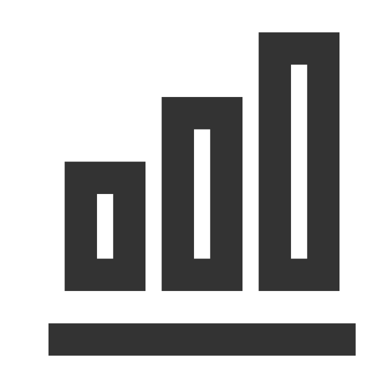

AI Engineer with 3+ years building production ML/LLM systems across automotive R&D and enterprise recruitment. Currently leading AI initiatives at Dexian — including a 100K+ calls/day MCP server, a 460-user enterprise chatbot, and an AI-driven interview platform. IIT Delhi graduate with deep expertise in RAG architectures, LLM fine-tuning (LoRA), surrogate modelling, and end-to-end MLOps.
Click any tag below to see what's behind each interest.

Successfully passed (DI) the MicroMasters in Supply Chain Management affiliated to Massachusetts Institute of Technology (MIT). [2023-2024]